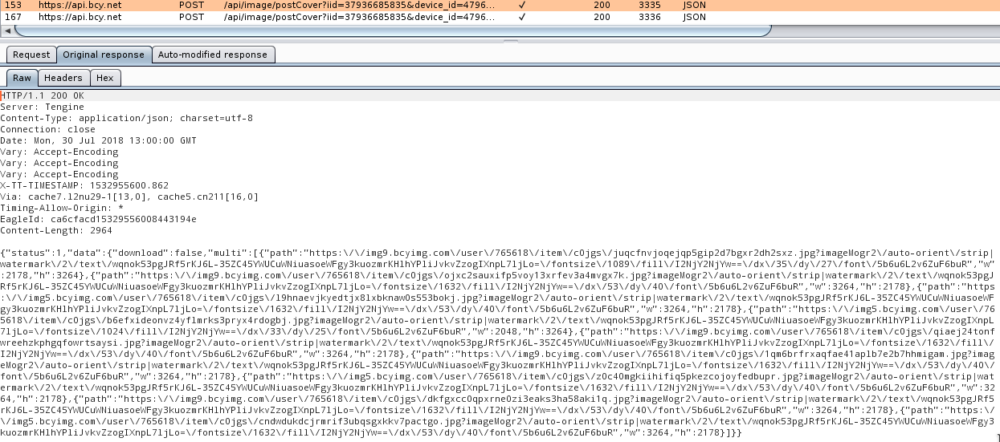
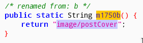
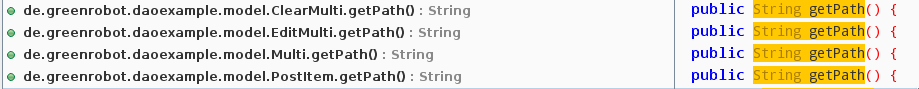

前言
最近吃饭的时候都在刷半次元，Cosplay区太多漂亮的小姐姐，可惜图片加了水印，并且有的图片不允许下载，不能方便随时欣赏，太煞心情了。 最近经常转发漂亮的小姐姐给朋友们，但是带了水印，被大家发现我沉迷半次元了。很是困扰，打算绕过这些限制。
抓包分析
半次元使用了HTTPS通信，以及使用了证书绑定（HPKP），通过使用Xposed框架的JustTrustMe插件，可以绕过证书验证。
于是使用BurpSuite抓包。

分析Response可以得知，download为false是禁止下载的标识。图片的路径添加了imageMogr2后缀，即七牛云的高级图片处理，因为这两个内容都是写死在HTTP响应里的，所以只hook响应内容也是一个不错的方法。
分析代码逻辑
使用JADX-GUI打开半次元的APK，发现代码被混淆，网络请求使用了Volley框架。
查阅官方文档，实现一个请求需要设置RequestQueue，然后使用onResponse处理响应事件。
RequestQueue mRequestQueue;
// Instantiate the cache
Cache cache = new DiskBasedCache(getCacheDir(), 1024 * 1024); // 1MB cap
// Set up the network to use HttpURLConnection as the HTTP client.
Network network = new BasicNetwork(new HurlStack());
// Instantiate the RequestQueue with the cache and network.
mRequestQueue = new RequestQueue(cache, network);
// Start the queue
mRequestQueue.start();
String url ="http://www.example.com";
// Formulate the request and handle the response.
StringRequest stringRequest = new StringRequest(Request.Method.GET, url,
new Response.Listener<String>() {
@Override
public void onResponse(String response) {
// Do something with the response
}
},
new Response.ErrorListener() {
@Override
public void onErrorResponse(VolleyError error) {
// Handle error
}
});
// Add the request to the RequestQueue.
mRequestQueue.add(stringRequest);
// ...
根据抓包的结果，可以提取出下列关键词。
image/postCover
download
multi
path
在这里以URL中的image/postCover为关键词，全局搜索，被封装在m1750b方法里。然后找到调用它的代码。

public void m6896a(DetailType detailType, final C2271b c2271b) {
if (detailType != null) {
final Context context = (Context) this.f6216a.get();
if (context != null) {
// image/postCover 字符串拼接
String str = HttpUtils.f7520b + C0701m.m1750b();
List arrayList = new ArrayList();
arrayList.add(new C2753c("session_key", C0766a.m2185b(context).getToken()));
arrayList.add(new C2753c("id", detailType.getItem_id()));
arrayList.add(new C2753c("type", detailType.getType()));
this.f6217b.add(new C2764l(1, str, HttpUtils.m8132a(arrayList), new Listener<String>(this) {
/* renamed from: c */
final /* synthetic */ C2296a f6186c;
public /* synthetic */ void onResponse(Object obj) {
m6855a((String) obj);
}
/* renamed from: a */
public void m6855a(String str) {
// 判断 status 是否为1，如果为1则执行mo2699a。
if (C2763k.m8211a(str, context).booleanValue()) {
c2271b.mo2699a(str);
} else {
c2271b.mo2700b("");
}
}
}, new ErrorListener(this) {
/* renamed from: b */
final /* synthetic */ C2296a f6188b;
public void onErrorResponse(VolleyError volleyError) {
c2271b.mo2700b("");
}
}));
}
}
}
在com.banciyuan.bcywebview.biz.picshow.ViewPictureActivity2这个类中，找到了名为mo2699a的方法，不过这里是一个闭包，不方便编写hook代码。
protected void mo2523h() {
new C2296a(this).m6896a(this.f6170i, new C2271b(this) {
/* renamed from: a */
final /* synthetic */ ViewPictureActivity2 f6149a;
{
this.f6149a = r1;
}
/* renamed from: a */
public void mo2699a(String str) {
try {
String string = new JSONObject(str).getString("data");
this.f6149a.f6172k = (OrignPic) new Gson().fromJson(string, OrignPic.class);
this.f6149a.m6848w();
} catch (Exception e) {
this.f6149a.m6847v();
}
}
/* renamed from: b */
public void mo2700b(String str) {
this.f6149a.m6847v();
}
});
}
想更优雅一点，直接在要下载的地方hook，而不是每个请求都hook，往下翻找到m6849x方法。
private void m6849x() {
int i = 0;
while (i < this.f6171j.size()) {
Fragment c2290a = new C2290a();
Bundle bundle = new Bundle();
if (i < this.f6172k.getMultis().size() && m6832c(((Multi) this.f6172k.getMultis().get(i)).getPath()).booleanValue()) {
bundle.putBoolean("is_big", true);
// 可以看到在getMultis方法后面取值然后接上了getPath方法，和抓包过程中的Response层级一致
this.f6171j.set(i, ((Multi) this.f6172k.getMultis().get(i)).getPath());
this.f6164c.put(i, true);
if (i == this.f6178q) {
m6833c(8);
}
}
bundle.putString("path", (String) this.f6171j.get(i));
bundle.putInt("index", i);
bundle.putSerializable("uname", this.f6180s);
bundle.putBoolean("water_mark", this.f6181t);
c2290a.setArguments(bundle);
this.f6169h.add(c2290a);
i++;
}
this.f6165d.setAdapter(new C2282a(this, getSupportFragmentManager()));
this.f6165d.setCurrentItem(this.f6178q);
this.f6179r = this.f6171j.size();
this.f6166e.setText((this.f6178q + 1) + "/" + this.f6179r);
this.f6166e.setVisibility(0);
}
在上面这个方法中，并不是用setPath这种方式赋值，而是先放入一个bundle对象中，再批量给属性赋值。如果在这里hook，每次赋值都要判断，会非常不优雅。 既然有getMultis和getPath，那么肯定有判断是否允许下载的方法。还是全局搜索，发现使用greenDAO这个ORM框架，在de.greenrobot.daoexample下面找到了关键方法，只要修改下面方法就能绕过限制。

de.greenrobot.daoexample.model.Multi.getPath()
de.greenrobot.daoexample.model.PostItem.getPath()
de.greenrobot.daoexample.model.OrignPic.isDownload()
Frida Hook
先使用Frida验证一下hook这些方法是否可行，这台电脑还没装Frida，先安装一下。
sudo pip install frida-tools
wget https://github.com/frida/frida/releases/download/12.0.7/frida-server-12.0.7-android-arm64.xz
xz -d frida-server-12.0.7-android-arm64.xz
在安卓设备上运行Frida Server
adb push frida-server-12.0.7-android-arm64 /data/local/tmp
adb shell su -c "/data/local/tmp/frida-server-12.0.7-android-arm64"
使用frida-ps查看进程名称
frida-ps aU | grep banciyuan
半次元 com.banciyuan.bcywebview
编写调试脚本，hook并修改逻辑，输出为bcy.js。
setTimeout(function() {
Java.perform(function() {
var pathRe = /\?imageMogr2.*$/g;
var Multi = Java.use("de.greenrobot.daoexample.model.Multi");
Multi.getPath.implementation = function() {
var path = this.getPath().replace(pathRe, '');
console.log(path);
return path;
}
var PostItem = Java.use("de.greenrobot.daoexample.model.PostItem");
PostItem.getPath.implementation = function() {
var path = this.getPath().replace(pathRe, '');
console.log(path);
return path;
}
var OrignPic = Java.use("de.greenrobot.daoexample.model.OrignPic");
OrignPic.isDownload.implementation = function() {
console.log(this.isDownload());
return true;
}
});
}, 0);
运行调试脚本
frida -U -f com.banciyuan.bcywebview -l bcy.js --no-pause
普通预览存在水印，但是原图图片水印已经去除，已经绕过下载限制，并且实际保存的图片没有水印。
Xposed Module
直接贴代码
public class Main implements IXposedHookLoadPackage {
@Override
public void handleLoadPackage(final XC_LoadPackage.LoadPackageParam loadPackageParam) throws Throwable {
if (!loadPackageParam.packageName.equals("com.banciyuan.bcywebview"))
return;
findAndHookMethod("de.greenrobot.daoexample.model.Multi", loadPackageParam.classLoader, "getPath", new XC_MethodReplacement() {
@Override
protected Object replaceHookedMethod(MethodHookParam param) throws Throwable {
try {
String path = (String) XposedHelpers.getObjectField(param.thisObject, "path");
int imageMogrIndex = path.indexOf("?");
if (imageMogrIndex > 1) {
path = path.substring(0, imageMogrIndex);
}
return path;
} catch (Throwable t) {
XposedBridge.log(t);
return "";
}
}
});
findAndHookMethod("de.greenrobot.daoexample.model.PostItem", loadPackageParam.classLoader, "getPath", new XC_MethodReplacement() {
@Override
protected Object replaceHookedMethod(MethodHookParam param) throws Throwable {
try {
XposedBridge.log("PostItem");
String path = (String) XposedHelpers.getObjectField(param.thisObject, "path");
int imageMogrIndex = path.indexOf("?");
if (imageMogrIndex > 1) {
path = path.substring(0, imageMogrIndex);
}
return path;
} catch (Throwable t) {
XposedBridge.log(t);
return "";
}
}
});
findAndHookMethod("de.greenrobot.daoexample.model.OrignPic", loadPackageParam.classLoader, "isDownload", new XC_MethodReplacement() {
@Override
protected Object replaceHookedMethod(MethodHookParam param) throws Throwable {
return true;
}
});
}
}
附上GitHub链接
https://github.com/gorgiaxx/bcyhelper